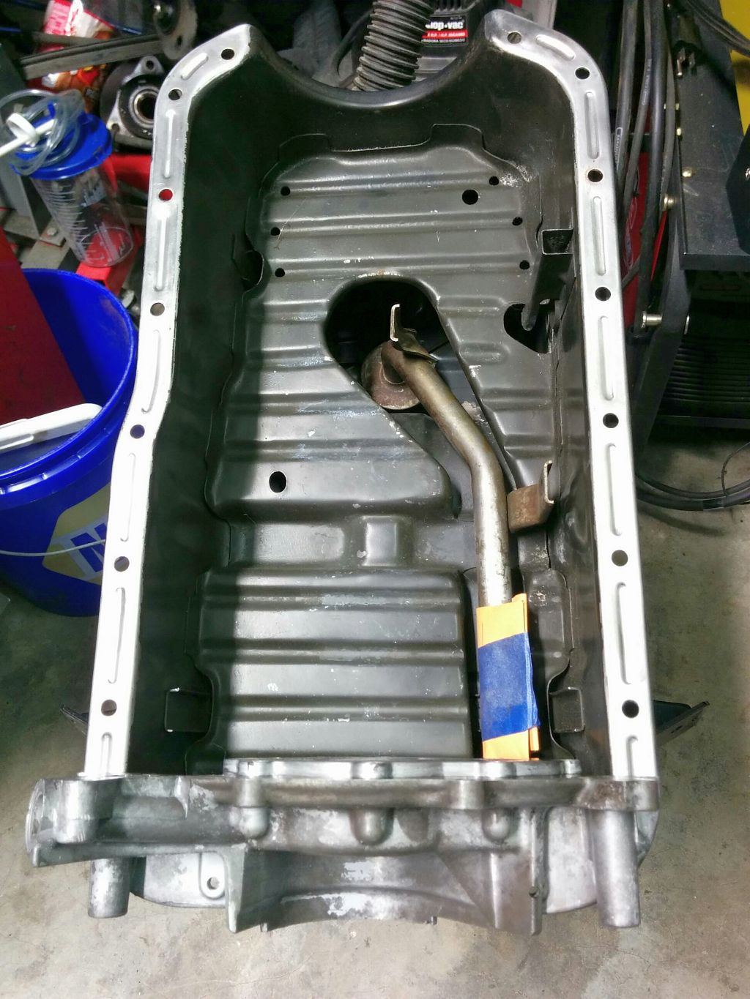

-
Hey guys, I was wondering how far away does the actual end of the oil pickup tube sit from the oil pan. Mines at 1/2" what do you guys think
-
That should be fine, are you running a modified pickup or what? -
okay i was a little worried. But yes modified pickup for a vg33 im working on. Do you or does anyone happen to know what the stock gap is? I was thinking 3/8 would be ideal? 1/4 woud be close i would think. I rear somewhere online a few hours ago and someone said their z32 was Quote "On a Z32 the measurement appears to be only 3/16"! No wonder people have so much trouble with oil starvation with dented oil pans!".
I would think 3/16 is really pushing it but i dont know if z32 gap is the same as z31 and if it was mine being so off would made me a little worried. -
I mocked this up last night with an undented turbo pan, and oil pump with a stock tube attached to it.
Now assuming that the M6 mounting points to the girdle bring it up slightly, i'd estimate the gap
to be similar to your numbers from the Z32, at between 3/16 and 1/4 inch from the bottom of the pan.

I double checked by loosening the M6 bolts attaching the oil pump to the pan and letting the pickup tube bottom out, then observe how much it was raised when the M6 bolts were tightened.

84 AE/Shiro #683/Shiro #820/84 Turbo -
Thanks for the post and picture, was very helpful and i did go ahead and re-weld it with my tig and its currently sitting pretty at just under 3/8. I felt 1/4 was a little to close. Ill post a pic tomorrow.

Copyright © 2006–. All rights reserved. Privacy Policy